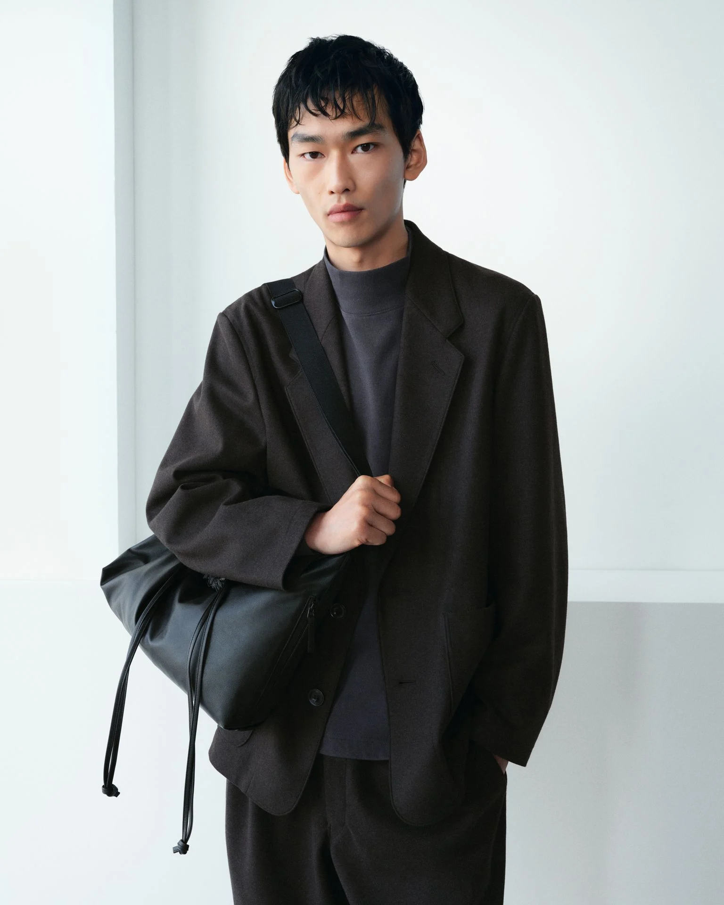

Things shaped
by time.
Observations on material, place, and the quiet character acquired through use.
Study index
A visual index of things that patina well.
Objects, spaces, materials, and fragments selected for the way they carry time.